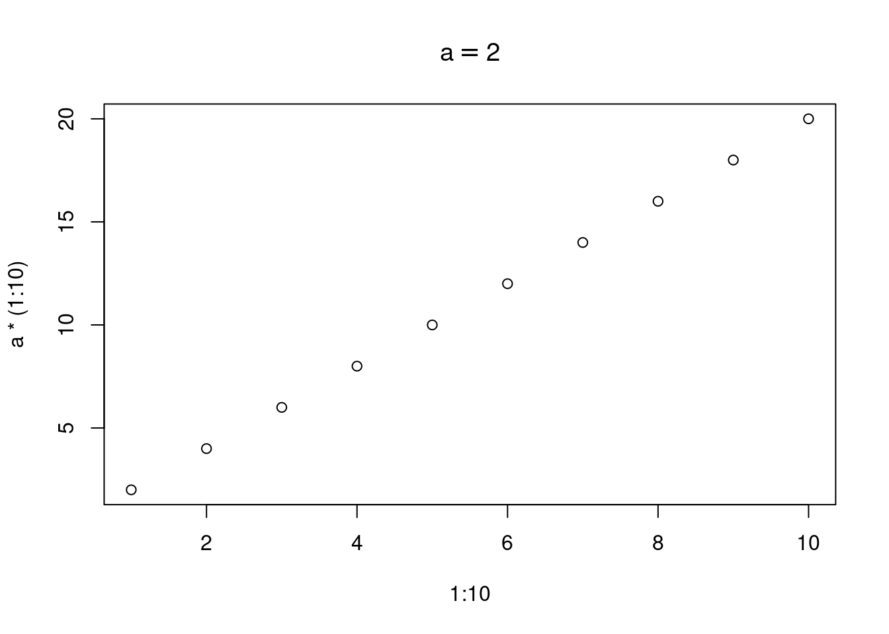
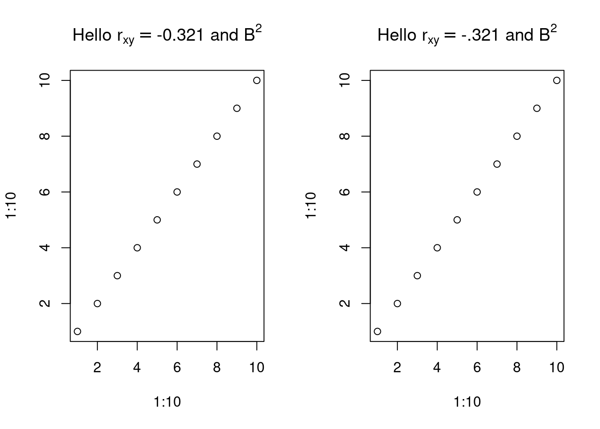

bquote(hello) ## hello
....-> hello
bquote("hello") ## "hello"
....-> [1] "hello"
## even when x is undefined
rm(x)
....-> Warning in rm(x): object 'x' not found
bquote(x) ## x
....-> x
x = 1
y = 2
z = 3
(xyz <- bquote(x + y + z)) ## (x + y + z)
....-> x + y + z410_bquote
Like quote, bquote can quote its argument
Like quote, bquote can return character, call, expression
xyz
....-> x + y + z
is.expression(xyz)
....-> [1] FALSE
is.character(xyz)
....-> [1] FALSE
typeof(xyz)
....-> [1] "language"
is.call(xyz) ## TRUE
....-> [1] TRUE
eval(xyz) ## 6
....-> [1] 6
(res = (bquote(hello)))
....-> hello
is.call(res)
....-> [1] FALSE
is.character(res)
....-> [1] FALSE
is.expression(res)
....-> [1] FALSE
is.symbol(res) ## TRUE
....-> [1] TRUE
eval(res) ## Error, b/c no object
....-> Error in eval(res): object 'hello' not found
(res = (bquote("hello")))
....-> [1] "hello"
is.call(res)
....-> [1] FALSE
is.character(res) ## TRUE
....-> [1] TRUE
is.expression(res)
....-> [1] FALSE
is.symbol(res) ##
....-> [1] FALSE
eval(res) ## "hello"
....-> [1] "hello"
(res = bquote(~x+y)) ## ~x+y
....-> ~x + y
is.call(res) ## TRUE
....-> [1] TRUE
purrr::is_formula(res)
....-> [1] TRUEbquote also allows parts to be quote and parts to be evaluated and substituted immediately
x = 1
quote(1 + .(x)) # 1 + .(x)
....-> 1 + .(x)
(res=bquote(1 + .(x))) # 1 + 1
....-> 1 + 1
is.call(res)
....-> [1] TRUE
is.expression(res)
....-> [1] FALSE
(res=bquote(template + .(x)))
....-> template + 1
is.call(res)
....-> [1] TRUE
is.expression(res)
....-> [1] FALSE
(res=bquote(sin(.(x)))) # sin(1)
....-> sin(1)
(res=bquote(sin(.(x+1)))) # sin(1)
....-> sin(2)
is.call(res)
....-> [1] TRUE
is.expression(res)
....-> [1] FALSE
(res=bquote(sin(.(x+1)), splice=TRUE)) # sin(1)
....-> sin(2)SPLICE in R 4.0.0 (multiple expresssions)
https://stackoverflow.com/a/60689381/5057251 https://stackoverflow.com/q/72039909/5057251 (multiple ways)
bquote: takes an R expression, evaluates .(), returns expression
(unevaluated) rm(x)
compare quote and bquote
# bquote - step by step , .() operator
bquote(1+2) # 1 + 2
....-> 1 + 2
two = 2
bquote(1 + two) # 1 + two
....-> 1 + two
bquote(hello)
....-> hello
bquote(1 + .(two)) # 1 + 2 (substitution, not eval)
....-> 1 + 2
eval(bquote(1 + two)) # 3
....-> [1] 3
eval(bquote(1 + .(two))) # 3
....-> [1] 3###—————————–
(stole from https://github.com/klmr/box)
subject=“bquote” mod_name=“base” bquote(help(topic = .(subject), package = .(mod_name))) eval( bquote(help(topic = .(subject), package = .(mod_name))))
subject=“quote” eval( bquote(help(topic = .(subject), package = .(mod_name)))) ##
d = 2 bquote(a+b+c + .(d)) ## a + b + c + 2
theta = pi/4 bquote(sin(1 + .(theta))) ## sin(1 + 0.7853…) eval(bquote(sin(1 + .(theta)))) ## 0.977
z= bquote(sin(1 + .(theta))) ## sin(1 + 0.7853…) typeof(z) ## “language” is.call(z) ## T eval(z) ## 0.977
::: {.cell}
```{.r .cell-code}
x = 5
bquote(x == .(x))
....-> x == 5
bquote(.(x))
....-> [1] 5
## from ethz documentation, takes expr, returns lang ob
default <- 1
(z = bquote( function(x, y = .(default)) x+y ))
....-> function(x, y = 1) x + y
typeof(z)
....-> [1] "language"
is.call(z) #T
....-> [1] TRUE
is.expression(z) #F
....-> [1] FALSE
is.symbol(z) #F
....-> [1] FALSE
a = 2
plot(1:10, a*(1:10), main = bquote(a == .(a)))
(angle = 1:10)
....-> [1] 1 2 3 4 5 6 7 8 9 10
(variable = as.name("angle")) ## variable is now a symbol
....-> angle
is.character(variable) # FALSE
....-> [1] FALSE
is.name(variable) # TRUE
....-> [1] TRUE
is.symbol(variable) # TRUE
....-> [1] TRUE
typeof(variable) # TRUE
....-> [1] "symbol"
##
expr = quote(x+y)
is.expression(expr) # FALSE
....-> [1] FALSE
is.call(expr) # TRUE
....-> [1] TRUE
str(expr)
....-> language x + y
#-----------------------------
## quasiquotation: insert .... into an expr template; return expression
pdf()
plot(x = 1:10, y=91:100)
bquote(x= .(variable))
....-> Error in bquote(x = .(variable)): unused argument (x = .(variable))
bquote(
plot(x = .(variable),
y = sin(.(variable)))
)
....-> plot(x = angle, y = sin(angle))
dev.off()
....-> png
....-> 2:::
## A variable to pass in
cor <- -.321
cor2 <- '-.321'
par(mfrow = c(1, 2))
plot(1:10, 1:10, main = bquote("Hello" ~ r[xy] == .(cor) ~ "and" ~ B^2))
plot(1:10, 1:10, main = bquote("Hello" ~ r[xy] == .(cor2) ~ "and" ~ B^2))
bquote("Hello")
....-> [1] "Hello"
bquote("Hello" ~ 3)
....-> "Hello" ~ 3
bquote("Hello" ~ r[xy])
....-> "Hello" ~ r[xy]
x = 2
bquote("hello" ~ .(x))
....-> "hello" ~ 2
bquote("x" ~ .(x))
....-> "x" ~ 2
bquote("The answer " ~.(x))
....-> "The answer " ~ 2
bquote(x == .(x))
....-> x == 2
if (F) bquote(x = .(x))
# want 1 + 2
y = 1
x=2
bquote( function(x, y = .(y)) x+y )
....-> function(x, y = 1) x + y
eval(bquote( function(x, y = .(y)) x+y ))
....-> function(x, y = .(y)) x+y
eval(eval(bquote( function(x, y = .(y)) x+y )))
....-> function(x, y = .(y)) x+y